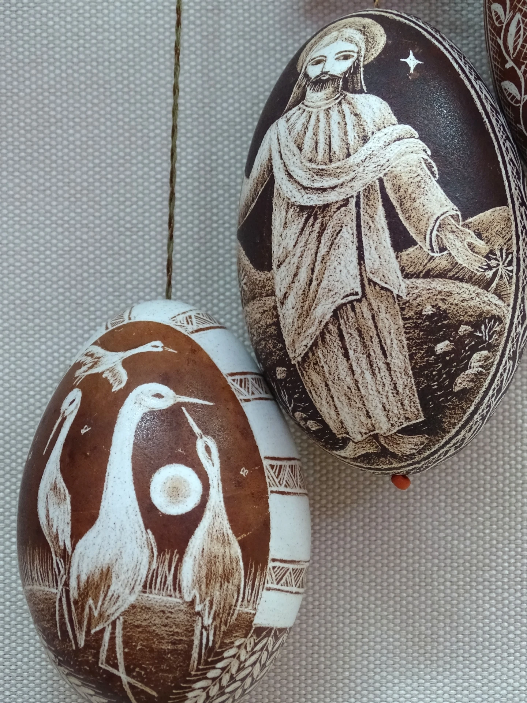
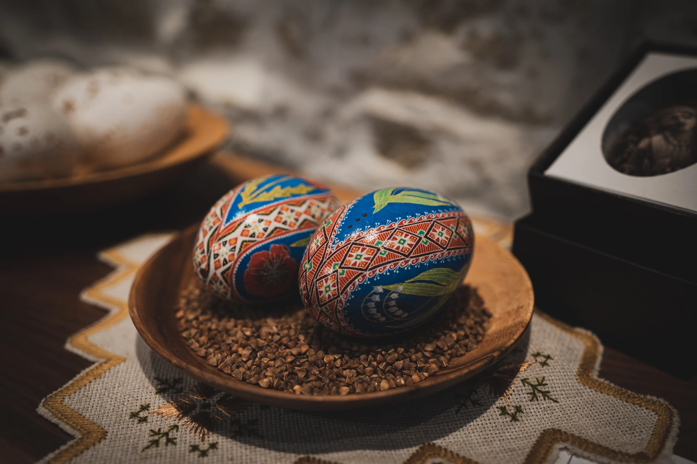
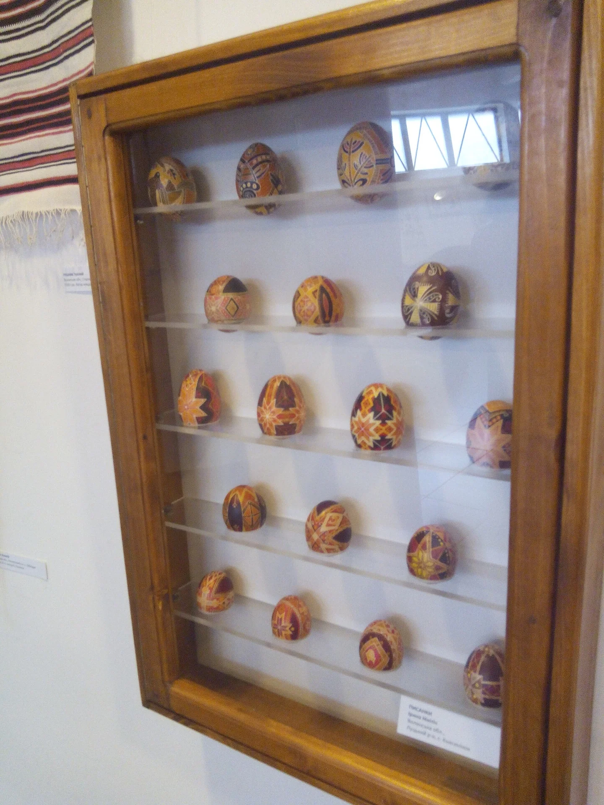
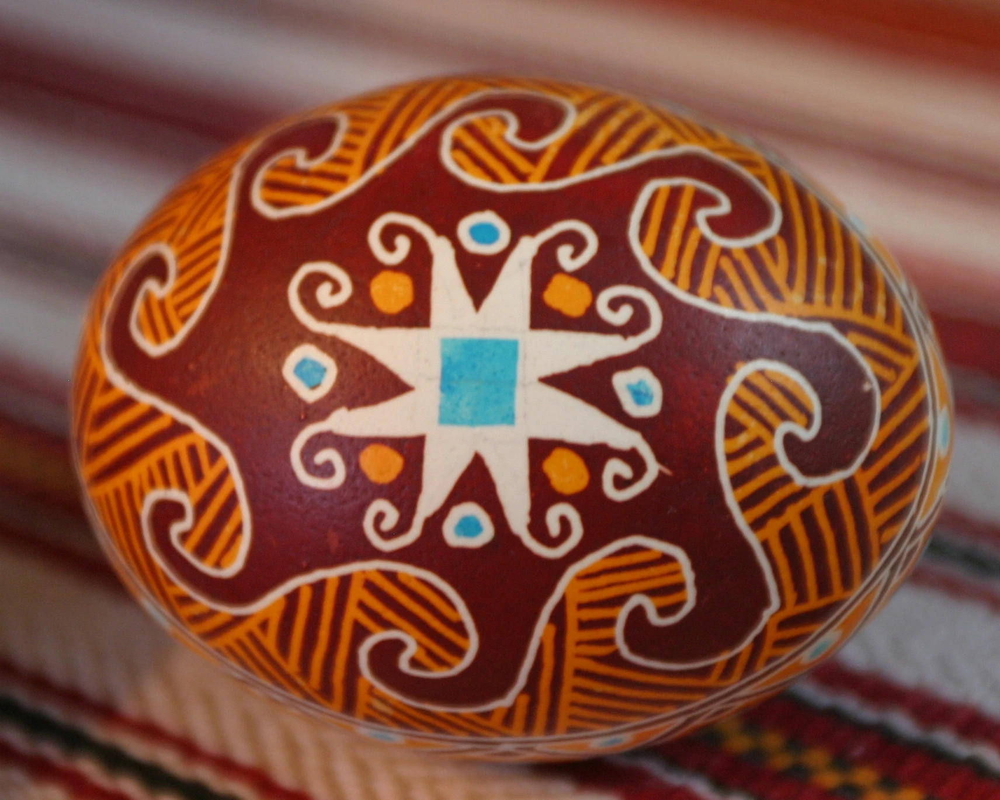
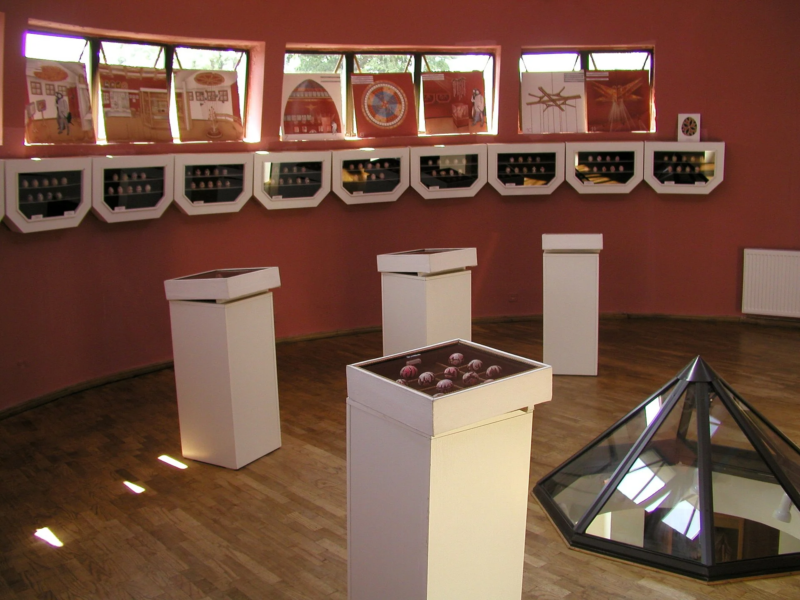
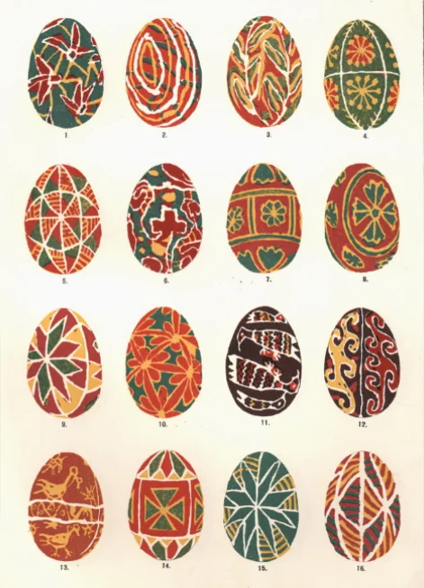
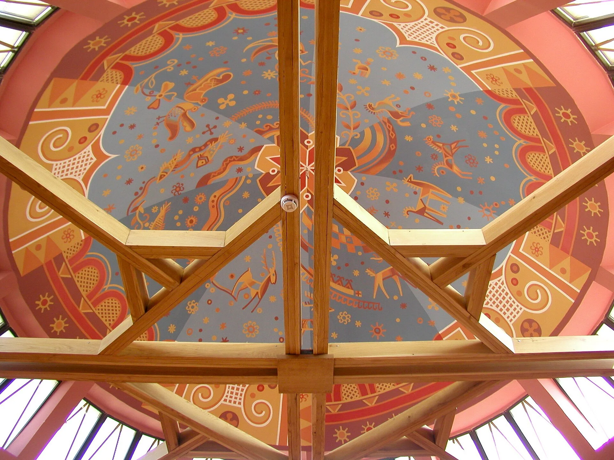

아직 펼치지 않은 카드깨지는 껍데기, 부푸는 빵 · 2피산카우크라이나 서부 콜로미야에는 건물 자체가 커다란 달걀 모양인 박물관이 있어요. 그 안에는 무엇이 모여 있을까요?커다란 달걀 모양 박물관이 있대!
부활절을 앞두고우크라이나 · 카르파티 산골
피산카
우크라이나 사람들은 부활절을 앞두고 달걀에 녹인 밀랍으로 무늬를 ‘써요’. 밝은 물에서 어두운 물로 몇 번이고 담그면, 무늬는 끝내 검은 밀랍 아래로 숨어요. 촛불 곁에서 밀랍을 녹여 숨은 무늬를 깨워 보세요.
우크라이나에서는 달걀에 밀랍으로 무늬를 써! 물감에 여러 번 담그면 까매지는데, 촛불로 밀랍을 녹이면 숨은 무늬가 나타나. 같이 깨워 볼까?
검수 전 시안이에요(기준서 1판). 장면에는 기록에 있는 것만 옮겼고, 사슬에 묶인 괴물과 성모의 눈물 이야기는 전해지는 이야기라고 밝혔어요. 상상은 ‘눈 감고 상상해 보기’에만 썼어요. 비추기에 쓴 달걀은 박물관의 그 달걀이 아니라, 2010년에 찍은 전통 무늬 피산카예요.
시안 확인용카드 단계 미리 보기
1
달걀에 쓰다
피산카(писанка)라는 이름은 우크라이나 말 ‘피사티’, 곧 ‘쓰다’에서 왔어요. 무늬를 붓으로 그리지 않고, 녹인 밀랍으로 ‘써’ 넣기 때문이에요.
쓰는 도구는 ‘키스트카’예요. 나무 막대 끝에 작은 쇠 깔때기를 단 펜이에요. 데운 밀랍이 만년필의 잉크처럼 흘러나와요.

옛날에는 어른 여인들이 피산카를 썼어요. 물감 만드는 법은 집안마다 비밀이었고, 어머니가 딸에게 물려주었어요.
카르파티 산지에 사는 우크라이나 사람들을 후출이라고 해요. 1958년에 나온 한 풍습 책은, 후출 마을의 한 할머니가 하루에 피산카 서른여섯 개를 썼다고 전해요. 화덕 불을 지키고, 밥을 짓고, 소젖을 짜고, 어린아이를 달래면서였어요.
피산카는 ‘쓴 달걀’이라는 뜻이야. 붓 대신 밀랍 펜으로 무늬를 써!
물어보기할머니는 밥을 지으면서 하루에 서른여섯 개나 썼대. 어떻게 그럴 수 있었을까?
2
밝은 물에서 어두운 물로
피산카를 쓰는 차례에는 규칙이 있어요. 가장 밝은 빛에서 가장 어두운 빛으로 가요.
먼저 하얀 껍데기에 밀랍으로 선을 그어요. 이 선은 끝까지 하얗게 남아요. 다음에는 노란 물에 담갔다가, 노랗게 남길 곳을 밀랍으로 덮어요. 그다음은 빨간 물, 마지막은 검거나 짙은 보랏빛 물이에요.

물에 들어갈 때마다 밀랍이 덮은 곳은 그 빛을 지켜요. 그래서 마지막 물에서 건진 달걀은 온통 어둡고 밀랍으로 울퉁불퉁해요. 피산카 만드는 법을 오래 알려 온 루바 페트루샤는 이런 달걀을 ‘미운 오리 새끼’에 빗대요.
옛날에는 풀뿌리와 나무껍질, 양파 껍질 같은 것으로 물감을 냈어요. 천연 물감은 물이 드는 데 몇 시간에서 하룻밤까지 걸렸어요.
밝은 물에서 어두운 물로 퐁당! 밀랍으로 덮은 곳만 그 빛이 남아.
물어보기마지막 까만 물에서 나온 달걀은 어떤 모습일까?
3
촛불 곁에서
이제 마지막 일만 남았어요. 다 마른 달걀을 촛불 옆에 대요. 밀랍이 녹아 젖은 듯 반들거리면, 부드러운 종이나 천으로 살살 닦아 내요.
불꽃 위가 아니라 꼭 옆에 대요. 위에 대면 그을음이 껍데기에 앉거든요. 아래 어두운 달걀을 문질러 밀랍을 녹여 보세요.
촛불 곁에 달걀을 대듯, 손가락이나 마우스로 문질러 밀랍을 녹여 보세요.

끝없는 선 무늬를 그린 전통 피산카(2010년 사진) · 사진: Lubap · CC BY-SA 4.0 · 위키미디어 공용
빛이 닿으면 숨은 표시가 나타나요.
밀랍을 다 닦아 냈어요. 하양, 파랑, 주황, 짙은 밤빛 — 물에 담근 차례가 무늬의 층으로 남았어요.
밀랍이 걷히는 자리마다 물에 담근 차례가 층층이 깨어나요. 맨 처음의 하양부터 마지막 물빛까지요.
옛 마을에서는 촛불 대신 화덕을 썼어요. 다 쓴 달걀을 그릇에 담아 화덕 안에 넣고 밀랍을 녹였어요. 1958년의 그 풍습 책은 따뜻한 화덕의 온도를 35~40도라고 적어요.
촛불 옆에 대면 밀랍이 녹아. 살살 닦으면 숨은 무늬가 나와!
물어보기까만 달걀 속에 어떤 빛깔들이 숨어 있었어?
4
달걀 모양 박물관
우크라이나 서부 콜로미야의 피산카 박물관은 1987년 한 교회 건물에서 문을 열었어요. 1990년 교회를 신자들에게 돌려준 뒤로는 한동안 마땅한 집이 없었어요.
2000년, 콜로미야에서 열린 후출 축제와 그리스도 탄생 2000년을 기려 달걀 모양 건물을 새로 지었어요. 높이는 13미터가 넘고, 지름은 10미터예요.

안에는 우크라이나 곳곳에서 모은 피산카와 여러 나라의 장식 달걀이 있어요.
부활절이 오면 피산카는 선물이 돼요. 옛 마을에서는 한 집에서 쓴 피산카를 가족과 아이들, 신부님, 그리고 먼저 떠난 가족의 무덤에까지 나눴어요.
다 쓴 피산카, 부활절에 누구에게 건넬까요?
달걀 모양 박물관이야! 그 안에 피산카가 아주아주 많아.
물어보기박물관 건물을 왜 달걀 모양으로 지었을까?
눈 감고 상상해 보기
부엌에 따뜻한 밀랍 냄새가 퍼져요. 검고 울퉁불퉁한 달걀을 촛불 옆에 대자, 밀랍이 녹아 반들거려요. 종이로 살짝 닦는 순간, 숨어 있던 하얀 별이 얼굴을 내밀어요. 손바닥 위의 달걀이 아직 따뜻해요.
눈을 감아 봐. 달콤한 밀랍 냄새가 나. 촛불 옆에서 까만 달걀을 살살 닦으면 — 하얀 별이 반짝!
나의 자리
층층이 쌓아 온 내 삶의 무늬 가운데, 지키고 싶은 색은 무엇인가요?
밀랍으로 덮은 곳만 처음 빛깔이 남아. 너라면 무엇을 하얗게 남겨 둘래?
마음에 닿는 한 줄을 고르거나 직접 써 보세요. 한 줄을 남기면 이 자리의 도장이 찍혀요. 이 기기에만 저장돼요.
더 깊이
궁금한 칸만 펼쳐 읽어도 괜찮아요.
알고 보면

사슬에 묶인 괴물 후출 사람들 사이에는 이런 이야기가 전해져요. 먼 산 절벽에 무서운 괴물이 무거운 쇠사슬로 묶여 있어요. 괴물의 심부름꾼 열둘이 마을을 돌며 사람들이 어떻게 사는지 살펴요. 사람들이 서로 다투면 사슬이 느슨해지고, 사이좋게 살면 사슬이 조여요. 괴물이 가장 두려워하는 소식은 사람들이 아직 피산카를 쓴다는 소식이에요. 1958년 올렉사 보로파이의 책 『우리 겨레의 풍습』에 실린, 전해지는 이야기예요.
눈물방울 무늬 후출 지방에는 이런 이야기도 있어요. 성모 마리아가 아들을 살려 달라고 빌라도에게 줄 피산카를 쓰다가 눈물을 흘렸대요. 그래서 후출 사람들은 피산카에 눈물방울 같은 점을 찍는다고 해요. 성경에는 없는, 전해지는 이야기예요(보로파이, 1958).
2,123개의 달걀 1899년 민속학자 세르히 쿨진스키는, 루브니에 박물관을 세운 카테리나 스카르진스카의 장식 달걀 2,123개를 그림과 함께 책으로 펴냈어요. 러시아 제국의 18개 주에서 모은 것이었어요. 이 칸에 실린 그림이 그 책의 한 쪽이에요. 그때는 황제가 우크라이나어 출판을 막아서 러시아어로 냈어요. 남은 달걀 일부는 오늘 폴타바 지역 박물관에 있어요.
2024년, 유네스코 유네스코는 2024년 피산카를 인류무형문화유산 대표목록에 올렸어요. 우크라이나와 에스토니아가 함께 신청했어요. 유네스코는 피산카를 주고받는 일이 종교와 상관없이 우크라이나 사람들에게 깊은 뜻이 있다고 적었어요. 아이가 태어날 때, 세례와 결혼 때, 세상을 떠난 이를 기릴 때도 피산카를 써요. 예전에는 어머니가 딸에게 전했지만, 이제는 누구나 배워요.
기록마다 다른 점
촛불일까, 화덕일까 오늘은 흔히 촛불 곁에서 밀랍을 녹여요. 한 피산카 상점 누리집은 이것을 ‘가장 오래된 방법’이라고 소개해요. 그런데 루바 페트루샤는 촛불 방법이 옛 우크라이나에서는 흔하지 않았고, 해외에 사는 우크라이나 사람들 사이에서 널리 퍼졌다고 적어요. 옛 마을에서는 달걀을 그릇에 담아 화덕(피치) 안에 넣어 녹였어요.
무늬의 뜻 별은 해, 끝없는 선은 영원 — 이런 풀이가 널리 퍼져 있어요. 하지만 페트루샤는 무늬의 뜻을 두고 ‘대부분은 우리도 정말 몰라요’라고 적어요. 옛 피산카 기록에는 오늘 붙이는 뜻 가운데 많은 것이 나오지 않는대요.
얼마나 오래되었을까 우크라이나 백과사전은 피산카가 선사 시대 트리필랴 문화에서 시작됐다고 적어요. 유네스코는 ‘수백 년 된 전통’이자 기독교보다 오래된 풍습이라고만 적어요. 달걀은 깨지기 쉬워서, 아주 오래된 피산카는 남아 있지 않아요.
속을 비울까 옛 피산카는 날달걀을 통째로 썼어요. 속을 비우는 건 생각할 수 없는 일이었고, 오래 두면 속이 말라 작은 덩어리가 돼요. 니스를 바르는 것도 20세기에 생긴 일이에요. 그 전에는 돼지기름이나 오리 기름을 문질러 윤을 냈어요.
박물관의 피산카는 몇 개? 카드 앞면에서는 1만 개가 넘는다고 했어요. 카르파티 지역 안내는 약 1만 2천 개라고 적고, 2013년 러시아 학술지의 한 글은 2층 전시장에만 6천 개가 넘는다고 적었어요.
피산카를 더 보려면

콜로미야 박물관의 둥근 천장에는 해와 사슴, 새와 물고기가 그려져 있어요(2003년 사진). 박물관 건물에는 600제곱미터쯤 되는 색유리를 둘렀어요.
아래 누리집에서 지방마다 다른 무늬와 쓰는 법을 더 볼 수 있어요.
숨은 층 찾기 금박
촛불로 비춰 숨은 무늬 다섯 곳을 모두 찾으면 카드에 금박이 입혀져요.
어두운 달걀을 끝까지 비춰 숨은 무늬 다섯 곳 찾기
부활절 선물 채색
둘 가운데 하나만 해도 카드가 채색돼요.
다 쓴 피산카를 부활절에 누구에게 건넬지 고르기
아이와 함께 ‘영화처럼 보기’를 끝까지 보기
근거 보기 (22)
- 유네스코 인류무형문화유산: 피산카(2024) — 밀랍으로 무늬를 그리고 염료에 담그기를 되풀이, 기독교 이전 풍습이 부활절 전통이 됨, 종교와 상관없이 선물, 출생·세례·결혼·고인을 기릴 때, 축복받은 피산카를 집에 둠, 가족과 강습으로 전승
- 유네스코 결정문 19.COM 7.B.14 — 우크라이나와 에스토니아가 함께 신청, 예전에는 어머니가 딸에게 전함
- 우크라이나 백과사전: 부활절 달걀 — 키스트카, 노랑→빨강→짙은 보라·검정, 열로 밀랍을 녹임, 뿌리·껍질·나무껍질 물감, 끝없는 선, 후출 무늬, 트리필랴 기원설, 옛 피산카는 남지 않음
- 우크라이나 박물관-문서고(클리블랜드): 피산카 ‘쓰기’ — ‘피사티’(쓰다), 키스트카, 만년필 잉크처럼, 가장 밝은 빛에서 가장 어두운 빛으로, 열로 밀랍을 녹임
- 루바 페트루샤, pysanky.info: 피산카 만들기 — 어른 여인만 씀, 집안마다 비밀 물감
- pysanky.info: 어떻게 썼나 — 하얀 선 먼저, 첫 물은 대개 노랑, 천연 물감은 몇 시간에서 하룻밤
- pysanky.info: 한 단계씩 — 초록·파랑은 솜 막대로, 밀랍 입은 달걀은 ‘미운 오리 새끼’, 촛불 옆에서 녹여 닦음
- pysanky.info: 촛불로 밀랍 녹이기 — 옛 우크라이나에서는 흔하지 않았고 해외 우크라이나 사람들 사이에서 퍼짐, 불꽃 옆에 대기, 그을음
- pysanky.info: 화덕으로 밀랍 녹이기 — 옛 집의 화덕(피치), 그릇에 담아 화덕에 넣음
- pysanky.info: 마무리 — 옛 피산카는 속을 비우지 않음, 니스는 20세기, 돼지·오리 기름으로 윤
- pysanky.info: 피산카 나누기 — 신부님께 한두 개, 무덤에 서너 개, 아이들과 대자녀에게 열에서 열다섯 개, 젊은이는 밝은 무늬·나이 든 이는 어두운 무늬
- pysanky.info: 끝없는 선(베즈코네치니크) — 처음도 끝도 없는 선, 가장 오래된 무늬 가운데 하나, 나쁜 기운이 갇힌다는 믿음
- pysanky.info: 해 무늬 — 여덟 끝 별은 모든 지방 피산카에 나오는 가장 흔한 해 모양(‘루자’)
- pysanky.info: 피산카 무늬의 뜻 — ‘대부분은 우리도 정말 몰라요’
- pysanky.info: 쿨진스키 『민속 피산카 수집품 해설』(1899) — 스카르진스카 수집품 2,123개, 18개 주, 러시아어 출판, 폴타바 지역 박물관
- 올렉사 보로파이, 『우리 겨레의 풍습』(1958) 피산카 편, 루바 페트루샤 영어 번역 — 하루 서른여섯 개를 쓴 후출 할머니, 따뜻한 화덕(35~40도)
- 올렉사 보로파이, 『우리 겨레의 풍습』(1958) 전설 편, 영어 번역 — 사슬에 묶인 괴물, 성모의 눈물
- 카르파티 안내(karpaty.rocks): 콜로미야 피산카 박물관 — 1987년 교회 건물에서 시작, 1990년 교회 반환, 2000년 새 건물(높이 13.5m·지름 10m), 약 1만 2천 개, 여러 나라 달걀, 색유리 약 600㎡
- N. N. 트카첸코, 「문화 속의 달걀」, 『현대 세계의 문화』 2013년 4호(러시아 국립도서관) — 2000년 후출 축제와 그리스도 탄생 2000년을 기려 지음, 높이 13m 넘음, 2층에 6천 개 넘게 전시
- 우크라이나 선물 가게 누리집: 촛불로 밀랍을 녹이는 법을 ‘가장 오래된 방법’으로 소개
- 위키미디어 공용: 끝없는 선 무늬 피산카 사진 설명(2010)
- 위키미디어 공용: 쿨진스키 『민속 피산카 수집품 해설』(1899)의 한 쪽 — 스카르진스카가 모은 달걀 2,000개 넘게 실은 책
그림·사진·소리 출처
‘처음 만나는 기독교 문화’의 깊은 카드예요. 카드 단계와 남긴 글은 이 기기에만 저장돼요.